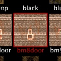

There are several ways to create new brushes and entities. It is recommended that you try all of the methods explained below because it depends on the context which one is most useful. In other words, sometimes it is quicker to simply duplicate an existing brush and sometimes it is quicker to create a new brush from scratch. In the next section, you will learn how to draw new brushes with your mouse, which is the most convenient way to create new geometry.
It is very important that you understand how mouse input is mapped to 3D coordinates when editing objects in TrenchBroom. Since the mouse is a 2D input device, you cannot directly control all three dimensions when you edit objects with the mouse. For example, if you want to move a brush around, you can only move it in two directions by dragging it. Because of this, TrenchBroom maps all mouse input to the horizontal XY plane. This means that you can only move things around horizontally by default. To move an object vertically (and left or right), you need to hold the key during editing.
Creating a new brush from scratch is easily done in TrenchBroom. Simply left click and drag your mouse on the 3D view to create a new cuboid. Note that for this to work, you must first deselect everything. While the mouse button is held down, you can move your mouse to resize the brush along the X and Y axes. To resize along the Z axis, hold the key while you keep dragging. If you start your drag while the mouse is over another brush, TrenchBroom will try to align the new brush with the other brush.
The position and orientation of the new brush depends on where you started to draw it. If you started in the void, it is positioned at a default distance from the camera. If you started your drag on another brush, it is positioned on that brush's surface at the point where you clicked. You can only draw a new brush if you deselect everything first.
Note that TrenchBroom automatically selects the most recently used texture when you draw a brush. The most recently used texture updated whenever you select a face or when you select a texture in the texture browser. A red border is drawn around that texture in the browser. Click here to find out more about texture management in TrenchBroom.
The easiest way to create a new point entity is to drag it from the entity browser. Switch to the Entity tab of the inspector to reveal the entity browser and find the entity you wish to insert. Now click this entity with the left mouse button and drag it into the 3D view. Once your mouse cursor enters the 3D view, the entity will be created and positioned on the surface of the brush under the mouse cursor. Keep dragging until it is correctly placed and release it. Note that if there is nothing under the mouse cursor, the entity will be positioned at a default distance to the camera.
You can create any type of entity by using the popup menu of the 3D view. To create a new point entity, right click in the 3D view and select the entity you wish to create from the Create Point Entity submenu. If you clicked on a brush when you opened the popup menu, the entity will be placed on the surface of that brush. If you clicked in the void, it will be placed at a default distance from the camera.
If you wish to create a brush entity, select the brushes that should belong to that entity, right click in the 3D view and select the brush entity from the Create Brush Entity submenu. To delete a brush entity, you can either delete all brushes belonging to that entity or you can move all brushes to another entity (such as worldspawn). To move brushes from one entity to another one, select the brushes you wish to move and then right click on a brush belonging to the entity to which you wish to add the selected brushes. Finally, choose Add Brushes to <classname> from the menu.
It is often very useful to create new objects by duplicating existing objects. You can duplicate brushes and entities by selecting them and choosing . The duplicated objects are offset by the current grid size towards the camera. Since TrenchBroom automatically selects the duplicates, you can edit them right away.
Standard commands apply: Cut (), Copy () and Paste ().
Just like in any other application, you can cut, copy and paste entities and brushes in TrenchBroom. Copied objects are placed on the clipboard as text snippets in the standard map format. This means that you can copy objects in TrenchBroom and paste them into a text editor and vice versa, however it is important to note that doing so may introduce floating point errors because Trenchbroom uses 'hidden' information during Copying and Pasting which helps preserve the complete structure of a brush but that information is lost when copying and pasting from text snippets.
Pasting behaviour is context sensitive, so depending on circumstances, the pasted object(s) will appear in different places.